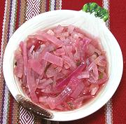

|
Marinated Red OnionsMexico - Yucatán - Cebollas Encuridas | ||||
| Makes: Effort: Sched: DoAhead: |
1-3/4 cup ** 3+ hrs Best |
This condiment appears on practically every table in the Yucatán region, especially when pork or chicken are served, but also with many other dishes | |||
|
12 ar ------ 13 4 3 1/2 2/3 1/3 1/3 ------ |
oz --- cl T c c t --- |
Onion, red Water, boiling -- Flavorings Peppercorns Allspice, whole Garlic Oregano, dried (1) Water Vinegar, white Salt ------------ |
Make - (3+ hours - 15 min work)
|